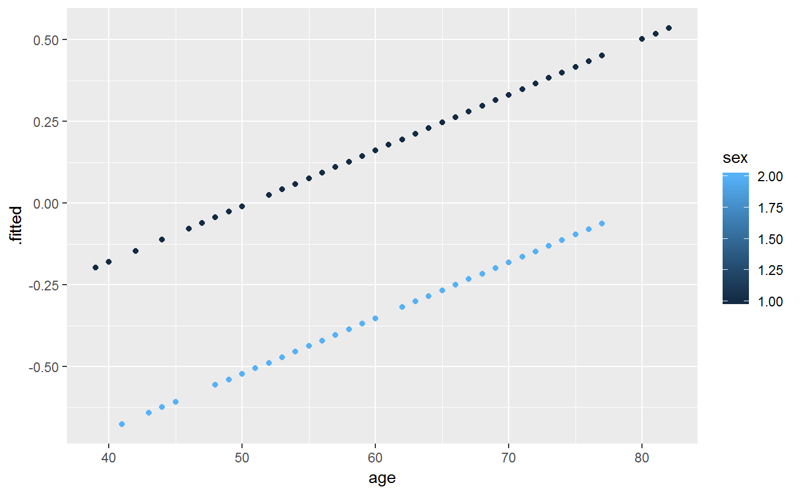
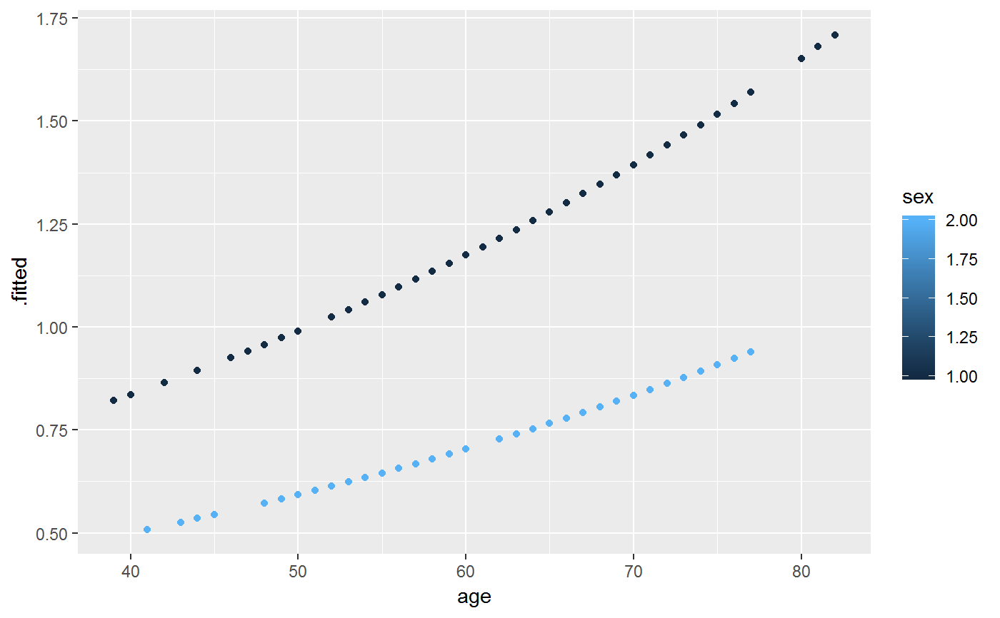
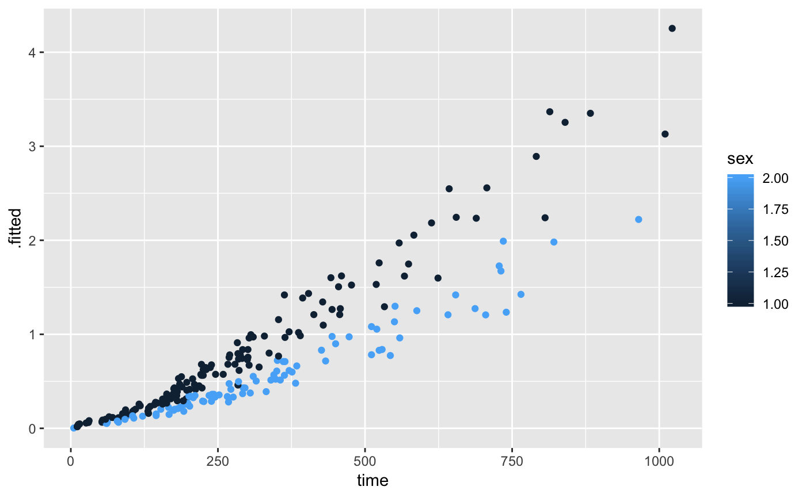

Tidy summarizes information about the components of a model. A model component might be a single term in a regression, a single hypothesis, a cluster, or a class. Exactly what tidy considers to be a model component varies cross models but is usually self-evident. If a model has several distinct types of components, you will need to specify which components to return.
# S3 method for coxph tidy(x, exponentiate = FALSE, conf.int = TRUE, conf.level = 0.95, ...)
| x | A |
|---|---|
| exponentiate | Logical indicating whether or not to exponentiate the
the coefficient estimates. This is typical for logistic and multinomial
regressions, but a bad idea if there is no log or logit link. Defaults
to |
| conf.int | Logical indicating whether or not to include a confidence
interval in the tidied output. Defaults to |
| conf.level | The confidence level to use for the confidence interval
if |
| ... | Additional arguments. Not used. Needed to match generic
signature only. Cautionary note: Misspelled arguments will be
absorbed in |
A tibble::tibble with one row for each term and columns:
estimate of slope
standard error of estimate
test statistic
p-value
Other coxph tidiers: augment.coxph,
glance.coxph
Other survival tidiers: augment.coxph,
augment.survreg,
glance.aareg, glance.cch,
glance.coxph, glance.pyears,
glance.survdiff,
glance.survexp,
glance.survfit,
glance.survreg, tidy.aareg,
tidy.cch, tidy.pyears,
tidy.survdiff, tidy.survexp,
tidy.survfit, tidy.survreg
#> # A tibble: 2 x 7 #> term estimate std.error statistic p.value conf.low conf.high #> <chr> <dbl> <dbl> <dbl> <dbl> <dbl> <dbl> #> 1 age 0.0170 0.00922 1.85 0.0646 -0.00103 0.0351 #> 2 sex -0.513 0.167 -3.06 0.00218 -0.841 -0.185#> # A tibble: 2 x 7 #> term estimate std.error statistic p.value conf.low conf.high #> <chr> <dbl> <dbl> <dbl> <dbl> <dbl> <dbl> #> 1 age 1.02 0.00922 1.85 0.0646 0.999 1.04 #> 2 sex 0.599 0.167 -3.06 0.00218 0.431 0.831lp <- augment(cfit, lung) risks <- augment(cfit, lung, type.predict = "risk") expected <- augment(cfit, lung, type.predict = "expected") glance(cfit)#> # A tibble: 1 x 15 #> n nevent statistic.log p.value.log statistic.sc p.value.sc statistic.wald #> <int> <dbl> <dbl> <dbl> <dbl> <dbl> <dbl> #> 1 228 165 14.1 0.000857 13.7 0.00105 13.5 #> # ... with 8 more variables: p.value.wald <dbl>, r.squared <dbl>, #> # r.squared.max <dbl>, concordance <dbl>, std.error.concordance <dbl>, #> # logLik <dbl>, AIC <dbl>, BIC <dbl># also works on clogit models resp <- levels(logan$occupation) n <- nrow(logan) indx <- rep(1:n, length(resp)) logan2 <- data.frame( logan[indx,], id = indx, tocc = factor(rep(resp, each=n)) ) logan2$case <- (logan2$occupation == logan2$tocc) cl <- clogit(case ~ tocc + tocc:education + strata(id), logan2)#> Warning: X matrix deemed to be singular; variable 9tidy(cl)#> # A tibble: 9 x 7 #> term estimate std.error statistic p.value conf.low conf.high #> <chr> <dbl> <dbl> <dbl> <dbl> <dbl> <dbl> #> 1 toccfarm -1.90 1.38 -1.37 1.70e- 1 -4.60 0.810 #> 2 toccoperatives 1.17 0.566 2.06 3.91e- 2 0.0581 2.28 #> 3 toccprofessional -8.10 0.699 -11.6 0. -9.47 -6.73 #> 4 toccsales -5.03 0.770 -6.53 6.54e-11 -6.54 -3.52 #> 5 tocccraftsmen:educ~ -0.332 0.0569 -5.84 5.13e- 9 -0.444 -0.221 #> 6 toccfarm:education -0.370 0.116 -3.18 1.47e- 3 -0.598 -0.142 #> 7 toccoperatives:edu~ -0.422 0.0584 -7.23 4.98e-13 -0.537 -0.308 #> 8 toccprofessional:e~ 0.278 0.0510 5.45 4.94e- 8 0.178 0.378 #> 9 toccsales:education NA 0 NA NA NA NAglance(cl)#> # A tibble: 1 x 13 #> n nevent statistic.log p.value.log statistic.sc p.value.sc statistic.wald #> <int> <dbl> <dbl> <dbl> <dbl> <dbl> <dbl> #> 1 4190 838 666. 0 682. 0 414. #> # ... with 6 more variables: p.value.wald <dbl>, r.squared <dbl>, #> # r.squared.max <dbl>, logLik <dbl>, AIC <dbl>, BIC <dbl>